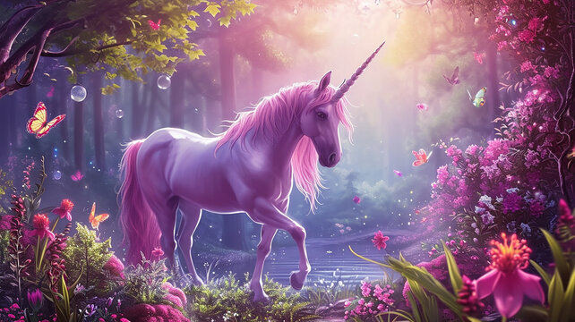

A thorough guide to all the known sightings of unicorns until this day
The unicorn is a legendary creature that has been described since antiquity as a beast with a single large, pointed, spiraling horn projecting from its forehead.
In European literature and art, the unicorn has for the last thousand years or so been depicted as a white horse- or goat-like animal with a long straight horn with spiralling grooves, cloven hooves, and sometimes a goat's beard. In the Middle Ages and Renaissance, it was commonly described as an extremely wild woodland creature, a symbol of purity and grace, which could be captured only by a virgin. In encyclopedias, its horn was described as having the power to render poisoned water potable and to heal sickness. In medieval and Renaissance times, the tusk of the narwhal was sometimes sold as a unicorn horn.
A bovine type of unicorn is thought by some scholars to have been depicted in seals of the Bronze Age Indus Valley civilization, the interpretation remaining controversial. An equine form of the unicorn was mentioned by the ancient Greeks in accounts of natural history by various writers, including Ctesias, Strabo, Pliny the Younger, Aelian,[2] and Cosmas Indicopleustes.[3] The Bible also describes an animal, the re'em, which some translations render as unicorn.[2]
The unicorn continues to hold a place in popular culture. It is often used as a symbol of fantasy or rarity.

A creature with a single horn, conventionally called a unicorn, is the most common image on the soapstone stamp seals of the Bronze Age Indus Valley civilization ("IVC"), from the centuries around 2000 BC. It has a body more like a cow than a horse, and a curved horn that goes forward, then up at the tip.[citation needed] The mysterious feature depicted coming down from the front of the back is usually shown; it may represent a harness or other covering. Typically, the unicorn faces a vertical object with at least two stages; this is variously described as a "ritual offering stand", an incense burner, or a manger. The animal is always in profile on Indus seals, but the theory that it represents animals with two horns, one hiding the other, is disproved by a (much smaller) number of small terracotta unicorns, probably toys, and the profile depictions of bulls, where both horns are clearly shown. It is thought that the unicorn was the symbol of a powerful "clan or merchant community", but may also have had some religious significance.
In South Asia, the unicorn is only seen during the IVC period, and disappeared in South Asian art after this. Jonathan Mark Kenoyer stated the IVC "unicorn" has no "direct connection" with later unicorn motifs observed in other parts of the world; nonetheless, it remains possible that the IVC unicorn had contributed to later myths of fantastical one-horned creatures in West Asia.